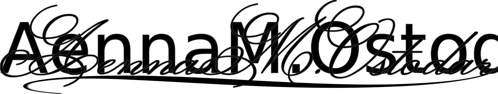

24 Tor.
Dearest Davian,
I was thinking about you the other day. The streets were grimy from rain and all the worms were writhing and dying in the muck. I thought about how ridiculous they looked on the surface and how much they should have stayed underground. Those worms looked more at home on Falsk streets than you did. They at least had the good sense to die a few hours after they emerged.
Thank you for kindly sending my money back. Since you were so unhelpful, I decided to do some good with it. I made a contribution to the concert hall on your behalf. I‘m sure Skeigi will enjoy playing on a perfectly tuned piano when he returns. I‘ll make sure to tell him that you were the one who sent the money. The least I can do to repay you for our time together is to make sure he is well taken care of.
I finally talked sense into some councilmen today and they signed off to lower the tariff on goods from underground. Don‘t worry, the guards will still find and hang you if you take advantage of this treaty. I just thought I would let you know that your competition now has more of an advantage. I am really too kind to you. Any other person wouldn‘t bother to warn you.
Freir‘s looking over my shoulder as I write. We are unbelievably happy. I am surprised I was able to pretend otherwise when you were here. That being said, you were not hard to fool. I hope the tunnels you travel through are more populated than your brain.
I would be remiss if I did not ask again for information about Selos. If you don‘t want money, there are other things I can pay you with. I have access to lots of information about trade underground. Do you want names? Travel routes? Name your price, I want Selos destroyed far more than I want to spite you. Selos is somewhat respectable in that he‘s competent and, dare I say, menacing. You were as forgettable as the report on my desk this morning. I‘ve never been so depressed about the human race than when I met you.
Enjoy your tunnels and purple worms. I eagerly await your poisoned note, at least it would show some initiative.
With love,
